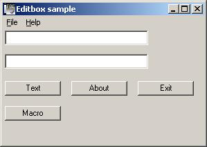

Ok now that we have created our first working window, how about
putting some controls
To our lill dialog.
Note: textboxes are called
editboxes and labels are calles statics from now on like in MS VC++
In this
tutorial we will transfer following Visual Basic into Windows API /
FreeBASIC
If Text1.Text <> VBNullstring
then
Text2.Text = Text1.Text
else Msgbox "You didnt enter any text!", vbinformation
End
if
Easy right ? Yeah cause the compiler is doing all the dirty
Windows API work for you.
This wont happen in C/C++ and for sure not in
FreeBASIC.
And we going to look into some other simple stuff to aswell.
Lets get
going.
Create a new project, and use this time DialogAsMain.tpl
as a template. Project name will be
Editbox. This new template is already
an almost complete application with everything you need.
All you need is to
place your controls and write the code for them, the rest is done by the
Editor.
As a free bonus you already get a dropdown menu Exit and
About.
| NOTE: For example you place a STATIC on your dialog and add following text to your static: >> Press "enter" to continue. << When trying to assemble&link you will get an error, thats because you have to DOUBLE "" the quotes each time you use them on a static, the same is for the EDITBOX caption. |

Once again FbEdit is doing lots of work for us, check your Editbox.rc file and open it with Notepad.We continue with our example:
The defining of editboxes and
buttons is done, now we have to give them unique ID`s.
Open your Editbox.bi
file.
Everything grey is what you should have already in your own file, whats
red is what you should
Insert.
#Define IDD_DIALOG 1000
#Define Text1 1001
#Define Text2 1002
#Define Command1 1003
#Define Command2 1004
#Define Command3 1005
#Define Command4 1006
#Define IDM_MENU 10000
#Define IDM_FILE_EXIT 10001
#Define IDM_HELP_ABOUT 10101
Dim Shared hInstance As HMODULE
Dim Shared CommandLine As ZString Ptr
Dim Shared hWnd As HWND
Dim Shared hIcon As HICON
Const ClassName="DLGCLASS"
Const AppName="Dialog as main"
Const AboutMsg=!"FbEdit Dialog as main\13\10Copyright © FbEdit 2007"
Const Warning="You didnt type any text"
Const Copyright="This is my software"
#Include Once "windows.bi"
#Include Once "win/commctrl.bi"
#Include Once "win/commdlg.bi"
#Include Once "win/shellapi.bi"
#Include "Editbox.bi"
Function WndProc(ByVal hWin As HWND,ByVal uMsg As UINT,ByVal wParam As WPARAM,ByVal lParam As LPARAM) As Integer
Dim buff As ZString*256
Select Case uMsg
Case WM_INITDIALOG
hWnd=hWin
hIcon=LoadIcon(hInstance,Cast(ZString Ptr,500))
SendMessage(hWin,WM_SETICON,NULL,Cast(LPARAM,hIcon))
'
Case WM_COMMAND
Select Case HiWord(wParam)
Case BN_CLICKED,1
Select Case LoWord(wParam)
Case IDM_FILE_EXIT
SendMessage(hWin,WM_CLOSE,0,0)
'
Case IDM_HELP_ABOUT
ShellAbout(hWin,@AppName,@AboutMsg,NULL)
'
Case Command1
' first we check if the user has inserted any text
' if so we copy it to the second textbox
If GetWindowTextLength(GetDlgItem(hWin,Text1)) Then
' ok here we get only if user has typed some text
GetDlgItemText(hWin,Text1,@buff,SizeOf(buff))
SetDlgItemText(hWin,Text2,@buff)
Else
' User didnt enter any text
MessageBox(hWin,@Warning,@AppName,MB_ICONERROR)
EndIf
'
Case Command2
' Win API for a messagebox
MessageBox(hWin,@AppName,@Copyright,MB_OK)
'
Case Command3
' Windows API: Unload me.
SendMessage(hWin,WM_CLOSE,0,0)
'
Case Command4
MessageBox(hWin,"Hello, this is a test","Messagebox caption",MB_ICONINFORMATION)
'
End Select
'
End Select
'
Case WM_SIZE
'
Case WM_CLOSE
DestroyWindow(hWin)
'
Case WM_DESTROY
PostQuitMessage(NULL)
'
Case Else
Return DefWindowProc(hWin,uMsg,wParam,lParam)
'
End Select
Return 0
End Function
Function WinMain(ByVal hInst As HINSTANCE,ByVal hPrevInst As HINSTANCE,ByVal CmdLine As ZString Ptr,ByVal CmdShow As Integer) As Integer
Dim wc As WNDCLASSEX
Dim msg As MSG
' Setup and register class for dialog
wc.cbSize=SizeOf(WNDCLASSEX)
wc.style=CS_HREDRAW Or CS_VREDRAW
wc.lpfnWndProc=@WndProc
wc.cbClsExtra=0
wc.cbWndExtra=DLGWINDOWEXTRA
wc.hInstance=hInst
wc.hbrBackground=Cast(HBRUSH,COLOR_BTNFACE+1)
wc.lpszMenuName=Cast(ZString Ptr,IDM_MENU)
wc.lpszClassName=@ClassName
wc.hIcon=LoadIcon(NULL,IDI_APPLICATION)
wc.hIconSm=wc.hIcon
wc.hCursor=LoadCursor(NULL,IDC_ARROW)
RegisterClassEx(@wc)
' Create and show the dialog
CreateDialogParam(hInstance,Cast(ZString Ptr,IDD_DIALOG),NULL,@WndProc,NULL)
ShowWindow(hWnd,SW_SHOWNORMAL)
UpdateWindow(hWnd)
' Message loop
Do While GetMessage(@msg,NULL,0,0)
TranslateMessage(@msg)
DispatchMessage(@msg)
Loop
Return msg.wParam
End Function
' Program start
hInstance=GetModuleHandle(NULL)
CommandLine=GetCommandLine
InitCommonControls
WinMain(hInstance,NULL,CommandLine,SW_SHOWDEFAULT)
ExitProcess(0)
End
When you are done, hit go. You get something like this:

We are done.
You can get the example code here.